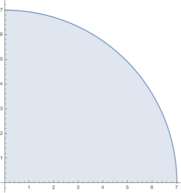

- (a)
- If we express the area of the shaded region in the figure as the limit of
Riemann sums
\(A=\lim _{n\to \infty } \sum _{k=1}^{n} f ( x_k^* ) \Delta x\),
find the function \(f\) and the interval \([a,b]\). - (b)
- Compute the limit.
\(\lim _{n\to \infty } \sum _{k=1}^{n} \sqrt {49- (x_k^* )^2 }\cdot \frac {7}{n}\)